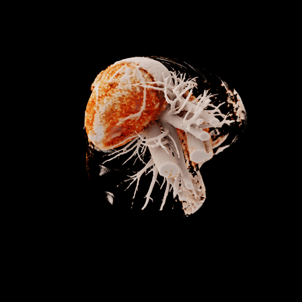

Real-time rendering of dynamic scenes with view-dependent effects remains a fundamental challenge in computer graphics. While recent advances in Gaussian Splatting have shown promising results separately handling dynamic scenes (4DGS) and view-dependent effects (6DGS), no existing method unifies these capabilities while maintaining real-time performance. We present 7D Gaussian Splatting (7DGS), a unified framework representing scene elements as seven-dimensional Gaussians spanning position (3D), time (1D), and viewing direction (3D). Our key contribution is an efficient conditional slicing mechanism that transforms 7D Gaussians into view- and time-conditioned 3D Gaussians, maintaining compatibility with existing 3D Gaussian Splatting pipelines while enabling joint optimization. Experiments demonstrate that 7DGS outperforms prior methods by up to 7.36 dB in PSNR while achieving real-time rendering (401 FPS) on challenging dynamic scenes with complex view-dependent effects.
Here, we present the qualitative comparison results of 4DGS and 7DGS (Ours), and Ground Truth.

@misc{gao20257dgs,
title={7DGS: Unified Spatial-Temporal-Angular Gaussian Splatting},
author={Zhongpai Gao and Benjamin Planche and Meng Zheng and Anwesa Choudhuri and Terrence Chen and Ziyan Wu},
year={2025},
eprint={2503.07946},
archivePrefix={arXiv},
primaryClass={cs.CV},
url={https://arxiv.org/abs/2503.07946},
}